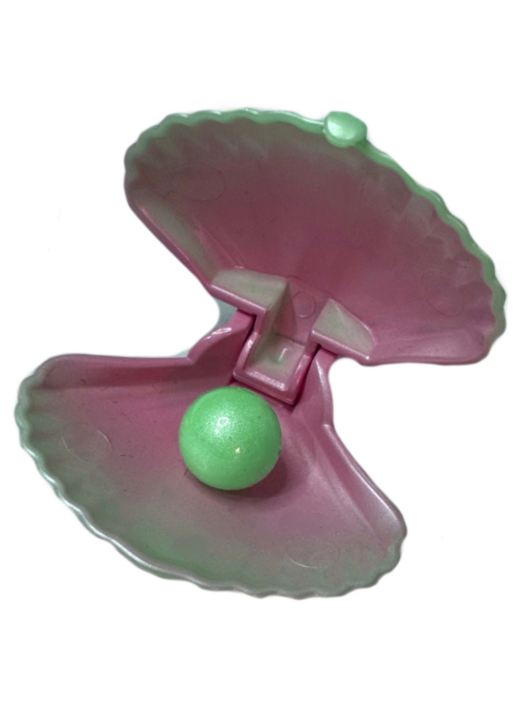

Some things are left by the ocean's inhabitants but others simply float down from the surface.

Strange, alien-like creatures roam the depths. Such as Giant Isopods, Giant Squids, Anglerfish. Unlike the lively coral reef cities, the dark depths
are cold and unforgiving. Some small communities can be found in sunken structures such as ships. However,
these places often serve as grimy casinos or other denizens of mischief.
Although it would seem that there isn't much going on down here, the animals have learned to adapt
to the dark waters.
With the advancement of deep sea travel, I am hoping to continue my studies in
the Mariana Trench! I will be the first marine biologist and aquatic explorer to venture this deep
and I am hoping to uncover many wonderful discoveries and new species.
Please stay tuned as I will be adding a blog at a later date to document my journey.